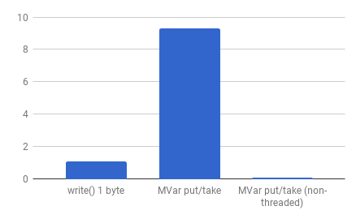
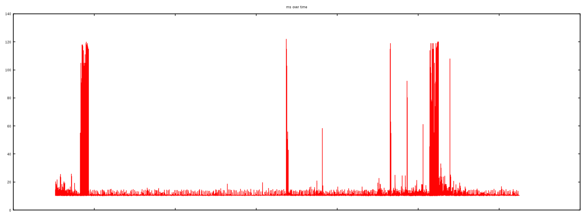

In general, I/O resources more expensive when contended.
Contention can hurt throughput pretty drastically.
Overlap
Bad idea for contended resources.
But not all I/O resources are contended.
Scaling
data locality
Faster layers in the I/O hierarchy, but stronger penalty for random
access.
Much higher throughput at steady state.
CPU's a lot more efficient when code and data already in cache.
Is Haskell equipped for high-throughput low-latency?
CPU bound services
Mature state-of-the-art native code compiler does wonders
GHC pretty good at avoiding:
unnecessary data copies while retaining modularity.
fusing repeated access into sequential access.
Could do better still:
guarantee absence of data copies.
better support for vectorization (SIMD).
I/O bound services
poor locality
no prioritization
high synchronization costs (MVar, oneshot).

Programmable concurrency
Idea: perform scheduling in Haskell
This is already what monad-par does.
This is also what Finagle (JVM) / Wangle (C++) do.
Empowers user to choose scheduling policy according to task type.
Improve throughput of I/O bound tasks with LIFO policy.
Round robin for CPU bound tasks (fairness).
Coroutine monad (aka Cont)
newtype Co r m a = Co ((a -> m r) -> m r)
fork :: Co r m a -> Co CoroutineId
read :: Handle -> Int -> Co ByteString
write :: Handle -> ByteString -> Co ()
connect :: Address -> Co Connection
...
Downsides:
antimodular!
closure allocation overhead.
Solution: use sparks.
Further challenges
It's peak latency that matters

What makes latency vary in a Haskell program?
Non-deterministic workload.
The system is an important source of latency.
Non-deterministic scheduling decisions.
Garbage collection!
How does garbage collection work?
Solution: off-heap memory allocation
Conclusion
Many strategies to mitigate latency and increase throughput.
But often a tradeoff: increasing throughput sometimes hurts e2e latency.
Haskell well equipped to achieve good throughput, most of the time.
But need better strategies to keep latencies bounded and predictable.
DIY I/O management should be part of your toolkit.